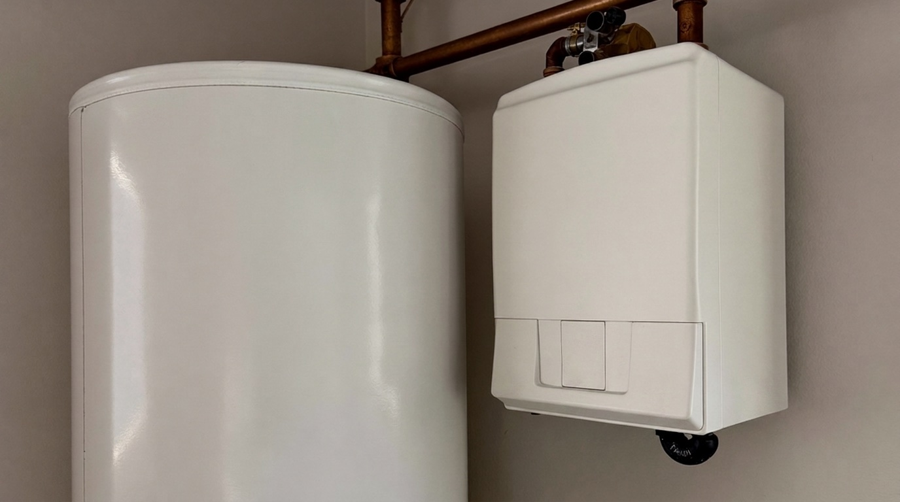
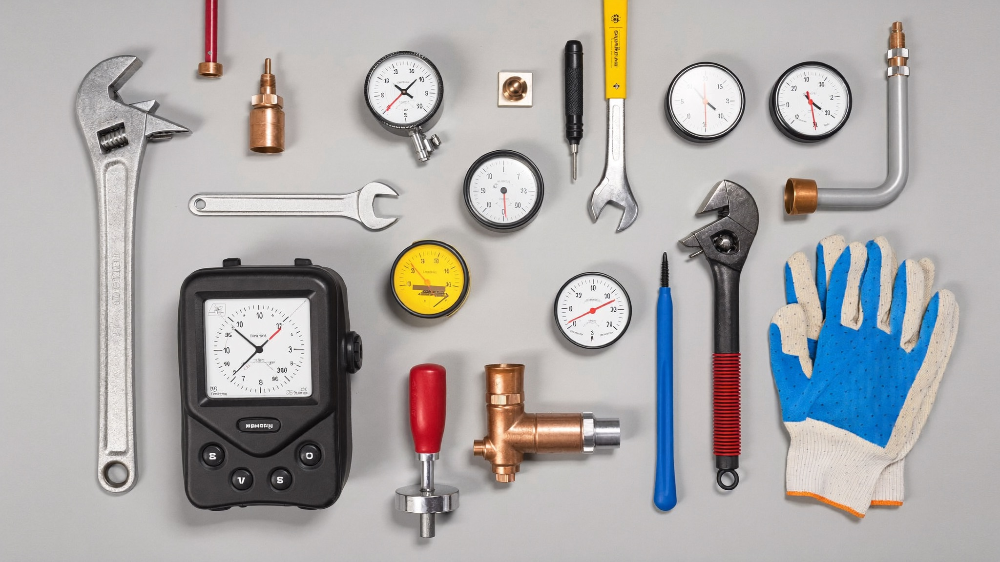
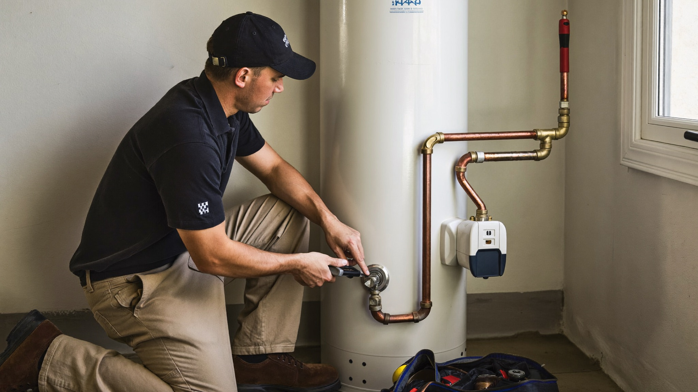

385.853.8116

Sunny Home Services’ water heater repair on the Wasatch Front restores hot water fast when your system quits. A cold shower on a January morning is more than an inconvenience, and along the Wasatch Front our hard water and mineral-heavy supply push water heaters harder than most of the country, so small problems rarely stay small.
When your water heater stops keeping up, waiting usually means a bigger repair or a flooded utility closet. Whether you’re near Jordan Landing, Daybreak, or a neighborhood along Mountain View Corridor, fast, professional local water heater repair gets hot water flowing again and protects your home from water damage.

Sunny Home Services’ plumbers are trained, certified, and experienced in diagnosing and repairing water heaters under real Wasatch Front conditions, where local water chemistry makes a measurable difference in how long equipment lasts.
On the Wasatch Front, that means a few very specific stress factors:
Because we service water heaters in these conditions every day, we understand how Utah homes are plumbed, how sediment shortens tank life, and how our winters change the way a system runs.
If you’re searching “water heater repair near me”, with Sunny Home Services you’re getting a local team that fixes the root cause, not just the symptom. That means fewer repeat callbacks, more consistent hot water, and repairs that actually hold up through the coldest months.
Water heater repair on the Wasatch Front usually comes down to a handful of recurring issues driven by both water chemistry and everyday use.
Utah’s hard water is the biggest factor: minerals settle out as sediment, coat heating elements, and corrode tanks from the inside. Add cold winter inlet water, aging equipment, and the tight spaces heaters are installed in, and small faults tend to compound quickly.
Sunny Home Services’ plumbers are frequently called out to address:
On the Wasatch Front specifically, we see failures tied to both newer and older homes:
Across the Salt Lake Valley, sediment is the single biggest reason water heaters fail early. Even a thin layer on the tank floor can cut efficiency and capacity noticeably, forcing the burner to run longer and shortening the life of the unit.

Knowing whether to schedule water heater repair on the Wasatch Front, or replace the unit entirely, comes down to age, condition, and how hard our water has been on the tank.
On the Wasatch Front homes, a tank in its first decade with an isolated fault is usually worth repairing, while an older unit dropping rusty water or leaking from the body is telling you it’s near the end. If you’re facing both an aging heater and repeated repairs, replacement is often the more cost-effective path.
Choosing among plumbing companies means finding a team that delivers both speed and reliability. Sunny Home Services provides the responsiveness of a large company with the personal touch and accountability of a local business.
We deliver:
On the Wasatch Front, where a leaking tank can damage floors and a cold snap makes hot water non-negotiable, response time matters. Heaters left unrepaired often go from a simple fix to a full failure and water cleanup.
Unlike many plumbing companies, we prioritize communication. You know who’s coming, when they’ll arrive, and exactly what work’s being done, no surprises.
Calling Sunny Home Services for local water heater repair means same-day response with clear communication and fast action from the first interaction.
Here’s what happens:
Most water heater repair calls are completed in a single visit because our trucks are stocked with common elements, valves, thermostats, and connectors, so we can restore hot water on the spot whenever possible.

The offers from our door hanger, redeemable when you book. Mention them when you call.